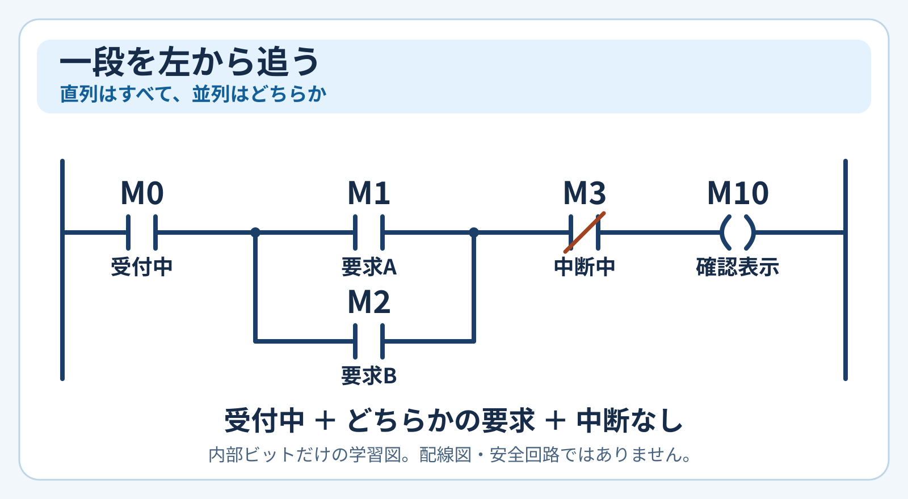
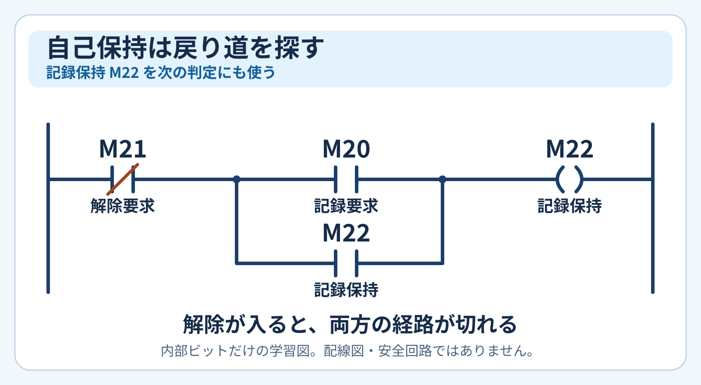

1. 先に結論
最終内容更新：
ラダー図は、まず右端で何を決める段かを見てから、その一段の条件を左から右へたどると読みやすくなります。直列はすべて、並列はどちらか一方以上。ただし、合流した先に条件があれば、そこも通らなければ結果はONになりません。
最初に切れている所を探す
色で強調された箇所だけを見ず、同じ段の接点・合流点・右端のコイルをまとめて読みます。ラダー上の条件が通ることと、実機が動いたことは別です。

後輩枝の片方が通ってるのに、右端はまだOFFです。どこを見ますか？

先輩枝が合流した先を見よう。この例では、斜線付きのM3も条件に入っているよ。
2. まずは「左から右へ流れを見る」と追いやすいです
下の一段は、教材の内部ビット M10（確認表示の判定）だけを更新する例です。M0 は受付中、M1 と M2 は要求A・B、M3 は中断中を表します。機器や配線に接続しない例なので、ボタンの線色や停止装置の種類をここから判断しません。

- M0がOFF：最初の直列接点で不成立。要求があってもM10はOFF。
- M0がON、M1・M2が両方OFF：両方の枝で不成立。合流点を越えられずM10はOFF。
- M0がON、M1かM2がON、M3がON：合流点までは成立。M3のb接点で切れ、M10はOFF。
- M0がON、M1かM2がON、M3がOFF：合流後の条件まで成立し、M10はON。この例ではM1とM2が両方ONでも同じ結果です。
並列で成立するのは、枝の区間だけ
並列を見つけたら、まず分岐から合流までを一つのまとまりにします。この例は「受付中、かつ（要求Aか要求B）、かつ中断なし」です。基本的なAND/ORの仕組みと、実際のエディタでどの段の結果を見るかを分けて考えると迷いません。
3. a接点・b接点は「普段どうなっているか」で見ると分かりやすいです
a/bはラダーが参照するビットの状態に対して読む記号です。縦線2本のa接点は対象ビットがONのとき、斜線付きのb接点は対象ビットがOFFのときに、その場所の条件を通します。
a接点：対象がONなら通す
M1がONなら要求Aの枝は成立。M1がOFFなら、そちらの枝は不成立でもM2側は別に読みます。
b接点：対象がOFFなら通す
M3が「中断中」なら、M3がONで不成立。OFFで成立ですが、M0や並列の条件まで成立した意味ではありません。
実物の接点と、プログラムの接点は分けて考える
実物のボタンが常閉か、センサがどの状態で入力ONにするかは配線図とI/O表で確認します。プログラムの斜線だけでは配線の種類も設備が安全な状態かどうかも分かりません。
4. 自己保持は「一度入ったら自分でつなぎ続ける」と考えると見やすいです
自己保持を見分ける手掛かりは、右端のコイルと同じ番号のa接点が、要求の枝と並列になっていることです。右端が出力コイルだからといって、常に自己保持とは限りません。

- 開始前はM20・M21・M22がすべてOFF。M21のb接点は通りますが、どちらの枝も通らずM22はOFFです。
- M21がOFFのままM20が一回の判定でONになれば、上の枝でM22がONになります。次にM20がOFFでも、更新済みのM22が下の枝を成立させます。
- M21がONになると両枝より左で不成立となり、M22はOFF。M20もOFFなら、後でM21がOFFに戻ってもM22はOFFのままです。
ここでは1段だけがM22を更新し、初期状態はOFFとしています。装置の再起動や停電後に何が残るかは、この図だけでは分かりません。
5. トラブル時は「動かない出力」から逆に追うと見やすいです
既存の画面や記録で「結果が出ていない」と分かったら、右端の結果から逆にたどると調べる範囲を狭められます。上の例でM10がOFFなら、まずM3と並列の合流点を見て、どの範囲まで条件が通っていたかを分けます。
1. 結果の番号・役割をそろえる
記録の対象や図面の番号が合っているか。内部ビットのMと外部出力を示すYは別です。Yの表示だけで機器が実際に動いたとは言えません。
2. 上流に一つずつ戻る
M3がONなら合流後で不成立。M3がOFFでも合流点が不成立ならM1・M2を別々に確認し、最後にM0を照合します。
3. 条件も結果も合わなければ、記録を合わせる
同じ番号を別の段で書き換えていないか、見ている回路・デバイス・時刻が同じかを確認します。一画面の表示だけで故障を断定しません。
4. プログラム上の結果と実機の記録を分ける
PLCの結果がONでも、出力先や機器の動きは別記録です。図面の接続先と設備所定の記録を照合します。
同じM10でも「使う段」と「書く段」は別
たとえば表示側の段の左にM10接点があっても、そこはM10を参照するだけです。最初に探すのは、右端のコイルなどM10を書き換える箇所。条件が成立していたのに記録のM10がOFFなら、ほかの書き込みや記録時点の違いを確認し、目の前の段だけで判断を終えません。
GX Works3は、図を読んだ次に照合する
この一段はエディタ画面の写しではありません。GX Works3の記録を見る場合も、色の意味を機種・版・表示状態に合わせて確認し、同じデバイス番号・同じ時点で照合します。この記事は稼働中の書き込み・強制操作や、カバーを開けて行う確認を案内するものではありません。
6. 最初はこの4つを押さえるとかなり読みやすくなります
- 左から右へ見て、条件が通るかを追う
- a接点は入ったら通る、b接点は入ったら切れるで見る
- 入力 → 条件 → 出力の流れで読む
- トラブル時は出力から逆に追う
この4つだけでも、ラダー図の苦手意識はかなり減ります。 まずは1段ずつ落ち着いて追えるようになるだけで十分です。
7. ラダー図の読み方でよくある疑問
Q. ラダー図は全部暗記しないと読めませんか？
最初から全部覚える必要はありません。 まずは入力、接点、出力の流れが追えればかなり読みやすくなります。
Q. a接点とb接点が毎回こんがらがります
対象のビットがONで通るのがa接点、OFFで通るのがb接点です。実物が常開か常閉かは配線図から別に確認します。
Q. 現場でラダー図を見る時、どこから見ればいいですか？
期待していた結果の番号を決め、直前の条件まで戻ります。分岐なら合流点の後を見てから枝を分けると、個別の接点だけで原因を決めつけずに済みます。
8. まとめ
ラダー図は、一段の接点がどこまで通り、右端の結果がどうなるかを読みます。枝が通っていても、合流後に条件が残っていれば、その先まで確認します。
- ラダー図は左から右へ条件を追う
- a接点は入ったら通る、b接点は入ったら切れる
- 自己保持は、一度入ったら自分の接点でつなぎ続ける回路
- トラブル時は、動かない出力から逆に追うと原因を探しやすい
メーカー公式資料
公式資料確認：
- 三菱電機「はじめてのシーケンサ 入門編」：4.1.3の接点とOUT、4.1.4〜4.1.6の直列・並列、4.1.8の自己保持。本文のM番号や演習図は独自例です。
あわせて読みたい記事
ラダー図の読み方が少し見えてきたら、入力と出力、自己保持、インターロック、PLCの全体像へ広げると理解しやすいです。